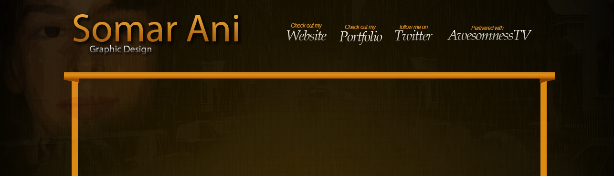
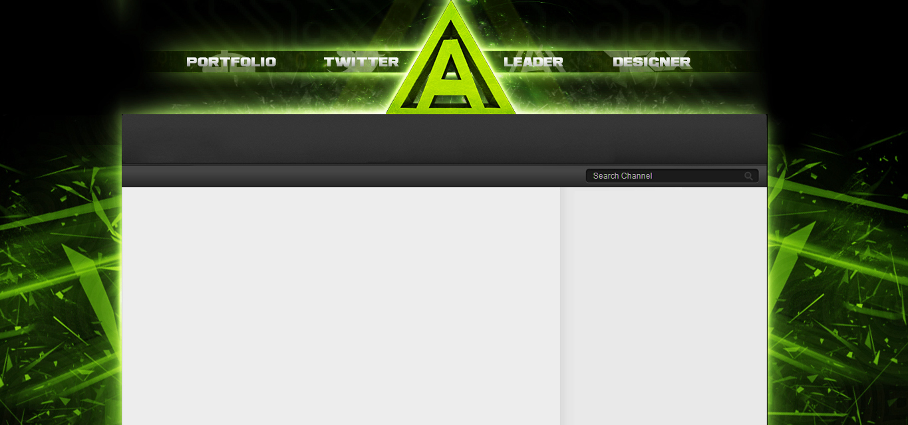
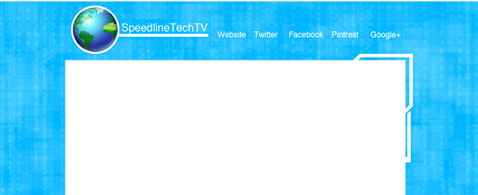
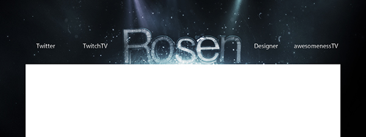
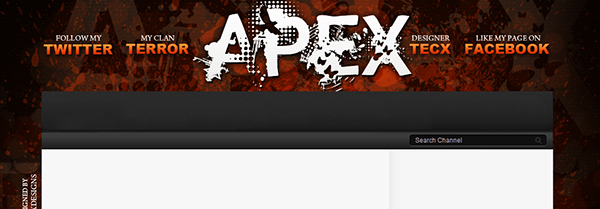
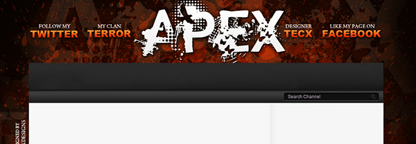

Incon is a professional e-sports player and twitch streamer. I created some graphics for him which he loved, and ended up doing his entire twitch info section.


Older versions of YouTube allowed content creators to use custom channel graphics and banners. I started making them for friends, and soon had a client base on YouTube as a graphic designer.
    
